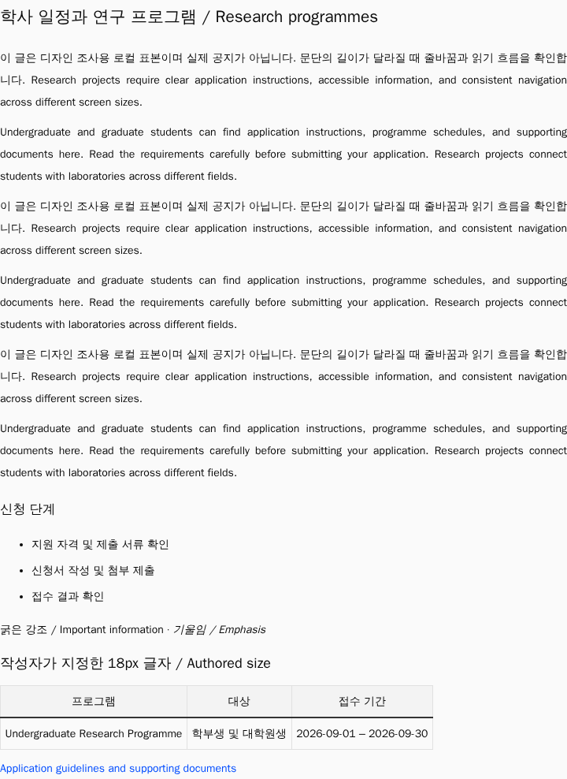

본문도 등록된 서체로
제대로 연결하면?
DS-006 · 기본 서체 연결 적용 완료기존 본문 스타일이 다른 서체 이름을 찾던 문제를 바로잡았다. 글자 크기와 행간을 유지한 채 연결만 고친 결과를 비교한다.
01. 같은 내용, 같은 폭에서 비교
장면을 고른 뒤 ‘적용 전’과 ‘승인한 연결안’을 전환해 보자. 아래 이미지는 실제 앱을 렌더한 본문 영역이다. 편집기도 같은 로컬 공지의 내용을 사용한다.

{kind=link}
{kind=link}
02. 이번에 바꾸는 것은 기본 서체 연결
| 항목 | 현재 → 연결안 |
|---|---|
| 본문·편집기의 기본 서체 | Pretendard부터 검색 → 등록된 Pretendard Variable부터 검색 |
| 일반 문단 크기·행간 | 14px · 28px 유지. 최종 타이포 스케일의 승인으로 취급하지 않는다. |
| 폭 지정·색·문단 정렬·패딩 | CSS 지정은 유지. 글자 폭이 바뀌어 줄 수·높이와 내용에 맞춰 줄어드는 영역의 실측 폭은 달라질 수 있다. |
| 기존 UI·메인 슬로건 | 이번 비교의 변경 범위 밖. 본문 컨테이너에만 서체를 연결한다. |
| 작성한 본문 | HTML 내용은 그대로. 명시한 18px는 뷰어에서 18px, 편집기에서 14px로 나타나는 기존 차이가 있다. 서체 연결 전후 모두 같으며 사용자 요청으로 기록만 남기고 보류했다. |
Linux Chromium에서 확인한 결과다. 현재 대체 서체는 운영체제에 따라 다를 수 있다. 768px에서 원래 있던 페이지 넘침은 이번 서체 연결로 해결한 것이 아니다. 글자 크기·행간·반응형 배치는 다음 비교에서 다룬다.
결정과 적용 · DS-006
공유 본문 CSS의 기본 서체를 Pretendard Variable로 연결했다. 크기·행간 등은 다음 타이포 검토에서 다룬다.
공개 본문 5장면에서 실제 CSS 적용 이미지가 승인한 연결안과 일치했다. 적용 측정 결과. 이 페이지의 6장면은 승인 전 비교 기록이며, 편집기 서식 차이는 사용자 요청으로 보류했다.
다음 검토는 색상과 글자 대비다.
실행 방법과 한계
Playwright 1.57.0 Linux Chromium과 현재 소스의 프로덕션 빌드에서 같은 DOM의 본문 컨테이너 font-family만 변경했다. 로컬 API가 제공한 HTMLViewer와 실제 편집기이며, 이미지를 새로 그린 모형이 아니다.
정식 실행의 Docker 빌드는 프록시 연결 시간 초과로 실패했다. 이번 비교는 기존 로컬 API 이미지와 설치된 의존성을 사용한 탐색 실행이다. API 명세 일치를 확인했고 프론트는 새로 빌드했다. 백엔드 이미지를 이번에 재빌드한 결과나 전체 앱 회귀 통과로 해석하지 않는다.
시드의 영어 인사말은 짧다. 긴 영어 문장은 혼합 공지의 두 번째 문단으로 보충했다. 작성자별 모든 글꼴·복잡한 붙여넣기·운영 데이터·다른 OS를 검증한 것은 아니다.